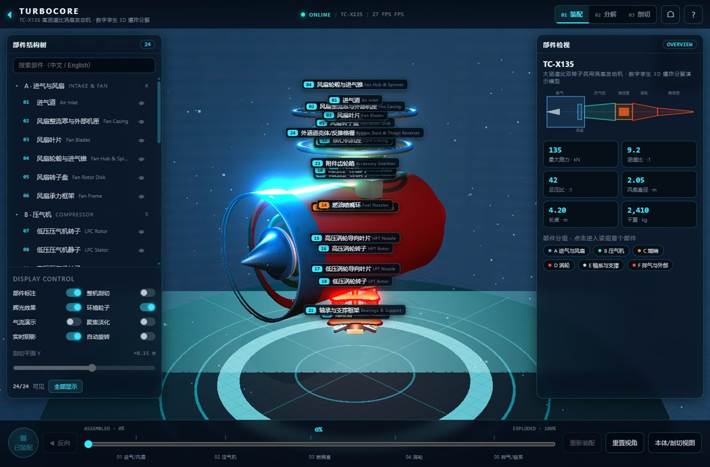
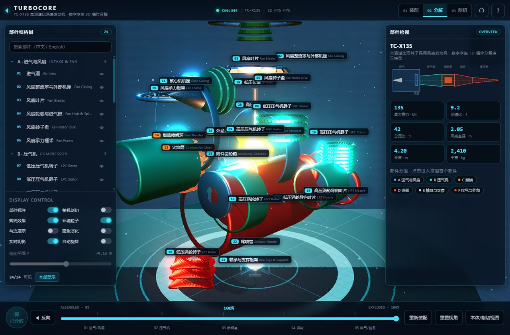
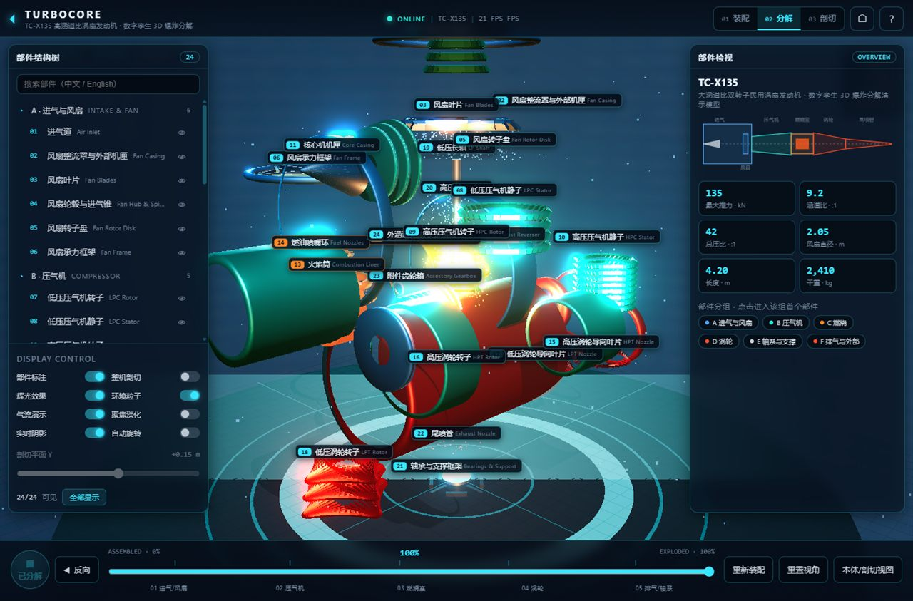
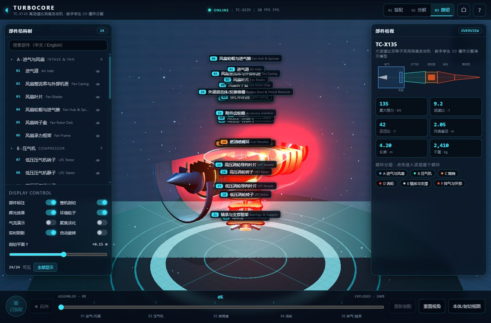
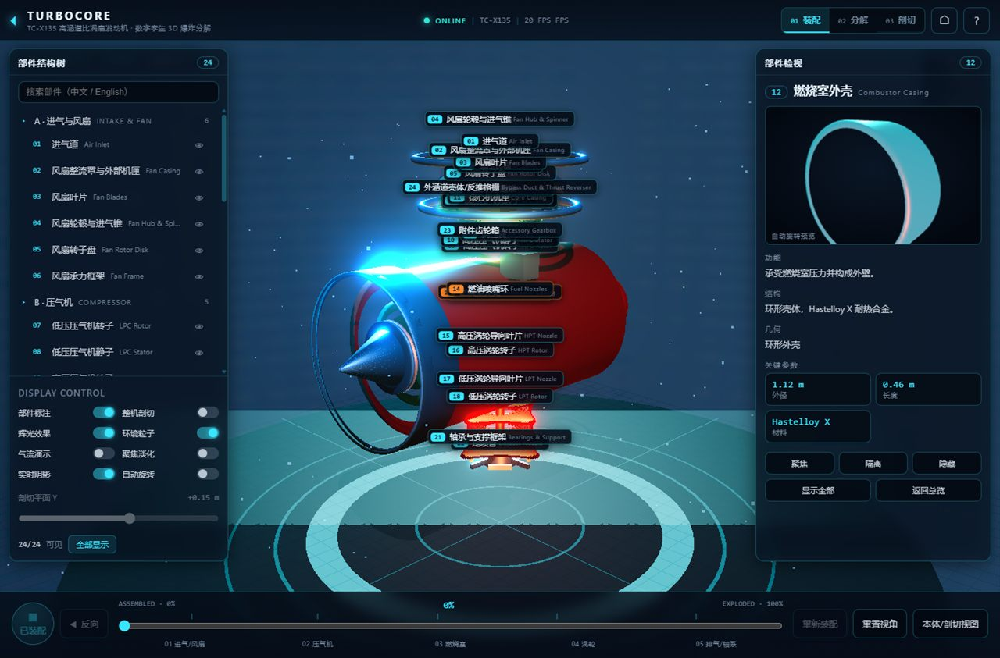
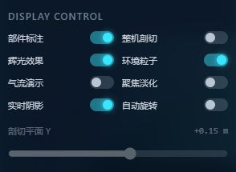

背景与目标
起点是一张「看不清楚」的结构图：涡轮风扇发动机的部件层层嵌套，风扇、压气机、燃烧室、涡轮与尾喷管被机匣包在一起，静态剖面图很难同时交代「谁在谁里面」和「气流往哪走」。我想做一个可以自己拖动分解进度的网页演示——从整机装配滑到完全散开，中间任意一帧都必须是确定的、可复现的画面。
因此约束先定下来：纯前端静态部署，不加载任何预渲染视频或序列帧；同一 progress 下每个部件的位姿由纯函数算出，而不是靠补间动画的运行时状态；爆炸进度、剖切平面与 8 个显示开关都落在同一套状态源上，避免「动画在跑但 UI 不知道」。
系统构成
24 个部件组成一台 TC-X135 高涵道比涡扇发动机。左侧部件树带搜索，点击任意节点高亮对应部件并同步到右侧检视面板；整体由解析式几何拼出，不依赖外部模型文件。
每个部件有装配位姿与分解位姿两端，中间由 partEase 缓动纯函数按 progress 插值。同一 progress 下位姿完全一致，所以拖动滑块、反向播放、重新装配都不会出现「回不到原位」的漂移。
一个可移动的裁剪平面实时裁切整机与本体，配合剖切 gizmo 调整位置。剖切不是隐藏半个壳体，而是让几何真正被切开，压气机与燃烧室的内部流道在切口处可见。
进气道、压气机、燃烧室、涡轮尾喷四个分区各自发射粒子，颜色沿流程由蓝到青、橙、红，直接叠在分解态上说明空气怎么走。
左下 8 个开关（部件标注 / 整机剖切 / 辉光效果 / 环境粒子 / 气流演示 / 聚焦淡化 / 实时阴影 / 自动旋转）+ 剖切 Y 滑块；底部时间轴提供反向、重新装配、重置视角与本体剖切视图。
关键实现
- 单一 progress 状态源：装配与分解、时间轴、滑块、反向播放、自动播放全部读写同一个 progress，UI 只做映射。任何一路操作都会被其余控件正确反映，不会出现两套动画状态打架。
- partEase 缓动纯函数：位姿是 progress 的纯函数——没有累积时间、没有随机数，同一进度下可逐帧复现同一画面，也让「同一角度的截图像素对比」这种验证方式成立。
- 实时剖切：用 Plane 裁剪做真正的几何切面，而不是把模型隐藏一半；裁切只影响渲染，不重建几何，因此拖动切面时帧率不掉。
- 自定义 GLSL 着色器：风扇叶片与壳体各有一套着色器。叶片按半径与攻角给出高光带，壳体保留金属菲涅尔与环境色，24 个部件在分解态下仍能区分材质。
- 辉光与部件标注：EffectComposer + UnrealBloomPass 让燃烧室与尾喷发光；部件标注由 CSS2DRenderer 输出 HTML 标签，聚焦淡化通过透明度实现，不删节点、不重排场景。
- 性能取舍：几何尽量合并，辉光与阴影可单独关闭作为降级；headless SwiftShader 软渲染下 HUD 仍有 22–27 fps，真实 GPU 更高。
画面
装配态 · 整机

进入页面时是整机装配态：左侧 24 部件树、右侧检视面板、底部时间轴与左下 DISPLAY CONTROL 同时在位。
100% 爆炸分解

24 个部件沿各自轨迹散开到最大间距，风扇、压气机、燃烧室、涡轮与尾喷管的层级关系一眼可见；HUD 上的帧率来自 headless 软渲染，属于性能下限。
分解 + 气流粒子

打开气流演示后，进气道、压气机、燃烧室、涡轮尾喷四个分区依次亮起，颜色由蓝过渡到青、橙、红，把「空气怎么被压缩、点燃、喷出」直接画在分解图上。
剖切视图

剖切平面切进机匣，压气机与燃烧室的内部流道暴露出来；剖切 gizmo 可以继续拖动改变切面位置，切面在装配态与分解态都成立。
选中部件 · 检视面板

点击部件树节点或直接点模型，该部件高亮、其余部件聚焦淡化，右侧检视面板给出部件名称、规格与说明，形成「整机—部件」两级阅读。
DISPLAY CONTROL 面板

8 个显示开关与剖切 Y 滑块的特写。每个开关都用 CDP 真实鼠标点击验证过 store 与场景状态同步翻转，并做过开/关两帧的像素级对比。
结果与验证
- 8/8 显示开关通过 CDP 真实鼠标点击验证：store 与场景状态同步翻转，复位后回到初始值，过程中无 console 错误。
- 像素级对比证明每个开关都有可见效果：辉光开/关 17.6% 像素变化、剖切 25.4%、部件标注 5.9%、聚焦淡化 3.9%、实时阴影 1.0%；气流粒子在分解态下可见。
- 爆炸位姿确定性：同一 progress 下重复渲染结果一致，拖动滑块、反向播放与重新装配都能回到同一画面，不存在「装不回去」的残留偏移。
- 性能：headless SwiftShader 软渲染下 HUD 显示 22–27 fps，真实 GPU 更高；辉光与实时阴影可单独关闭，作为低端设备的降级路径。
- 响应式：390px 宽度下页面无横向溢出，左侧部件树与右侧检视面板折叠为可滚动区域。
- 加载：无 console 错误、无 404，几何与着色器随构建产物本地加载，不依赖任何外部 CDN 资源。